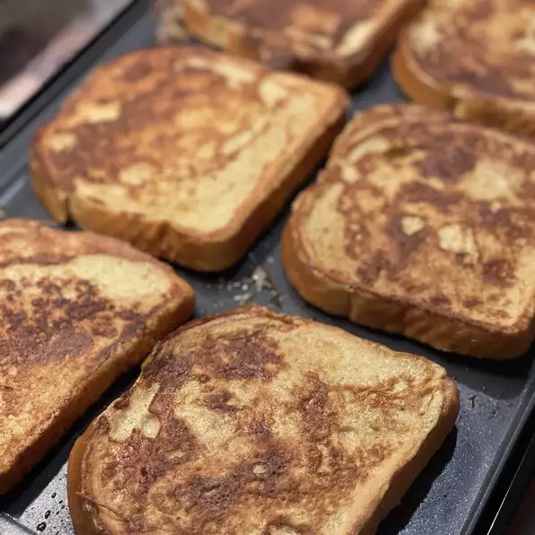

Back to Home
French Toast

Description
This is a good, old-fashioned way of making delicious French toast. To add a little pizzazz to it, sprinkle on some cinnamon after dipping the bread into the batter. Serve hot with butter and maple syrup.
Ingredients
- 4 eggs
- 2 tablespoons milk
- 1/4 teaspoon ground cinnamon
- 8 slices bread
Steps
- Combine eggs, milk and cinnamon; beat well. Dip bread into egg mixture until completely coated.
- Heat a lightly oiled griddle or frying pan over medium high heat. Cook bread slices until they are golden brown on both sides. Serve hot.